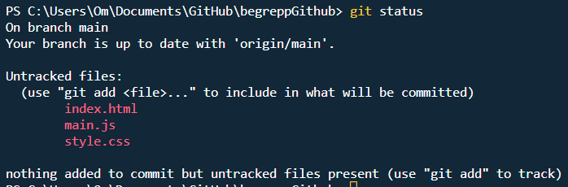
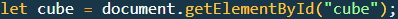
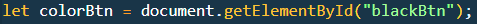
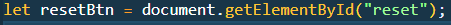
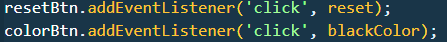
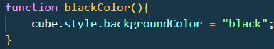
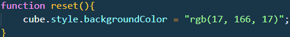

Github flow är ett arbetsätt att jobba med git som möjliggör sammarbete mellan flera personer.
En fil sparas i ett grundutförande, därifrån kan alla jobba med olika delar utan risk att förstöra någon annans arbete. Tillexempel kan en Person ha sin verision av grundkoden och jobba med design. Medans den andra jobbar med implementera funktioner i javascript. Sedan sammanförs detta utan att något krockar genom att man kan granska koden innan man sammanför dem till main grundkoden.
git clone https://githubrep.git --
( Klonar repot och skapar en lokal fil/version på datorn )
git status --
Kollar nuvarande filer som skiljer sig från grundkoden:

git add . --
( Lägger till allt till commit. )
git commit -m "La till röd text" --
( Lägger till filerna man vill skicka med en kommentar. )
git push --
( Skickar det man har commitat till report )
Bra praxis är att skapa en egen branch genom att ange:
git checkout -b fixarcss
-- Det är bra att namnge den nya branchen till något förklarande
[display:flex; flex-direction: column; justify-content: center; align-items: center; gap:.4rem]
Flexbox är skapat för att förenkla utveckling av responsiva webbsidor.
Förr var man tvungen att dela upp hemsidorna till flera separata.
Tillexempel: En för mobil och en för större skärmar. Att skapa en sida
med ren html och css kunde bli ett stort projekt. Man var tvungen att
modifiera enskilda obejekt.
Med introduktionen av flexbox förenklades detta, med implentation utav
denna metod förändras hemsidan utifrån skärmstorlek automatiskt. Helt
perfekt är det inte, utan det kan fortfarande krävas media queries,
dock i en mindre omfattning.
[display:flex; gap:.2rem]
-Standard i flexbox - de ställs upp i rad!
display:flex
[display:flex; flex-direction: column; gap:.2rem]
-Alla element visas under varandra
flex-direction:column;
Här hämtar vi själva kuben genom sit [ID]
Här hämtas knappen vi skapat
Vårat reset knapp hämtas
Vi tilldelar eventlisteners, vilket möjligör att vi kan läsa av när användaren klickar på knappen
Funktion för vad som ska ge när knapp 1 trycks
Funktion för återställning av färg.
1. Planera och var klar över projektets mål, -vad behövs, -vad är viktigast. Struktrurera upp en mall för hur du tänkt dig programmet ska funka innan du börjar koda.
2. Istället för att döpa en knapp till "button1", döp den till ett förklarande namn "changeColorBtn". När problem uppstår eller kunden vill ändra något, hittar du snabbt vart du ska ändra istället för att gå igenom 100 knappar.
3. Tänk dig att någon som inte är insatt i ditt projekt enkelt ska förstå vad du menar, och vad alla funktioner m.m. är tänkt att utföra.
4. Anpassa programmet och gå igenom funktioner och t.ex css styling, samt html tags. Finns det upprepande saker? Då finns det garanterat bättre sätt att utföra det på.
5. Kommentarer ska inte vara skrivna som en bok, utan kort och koncist vara ett hjälpmedel för att snabbt navigera i koden och förstå dess koncept.